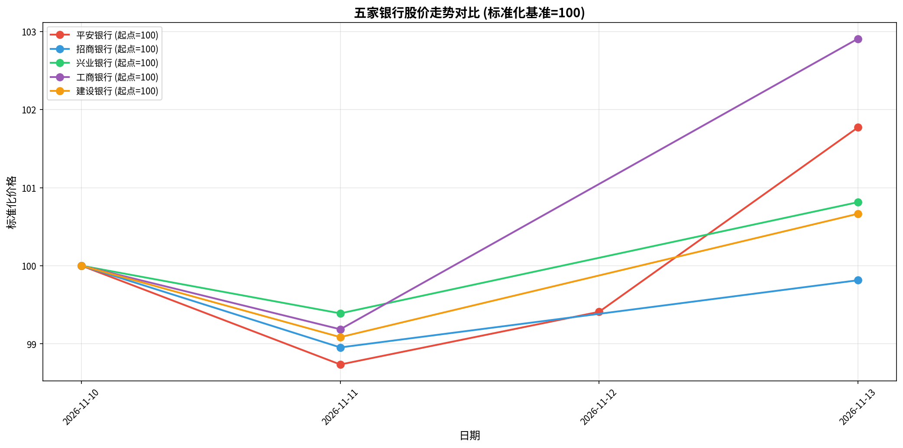
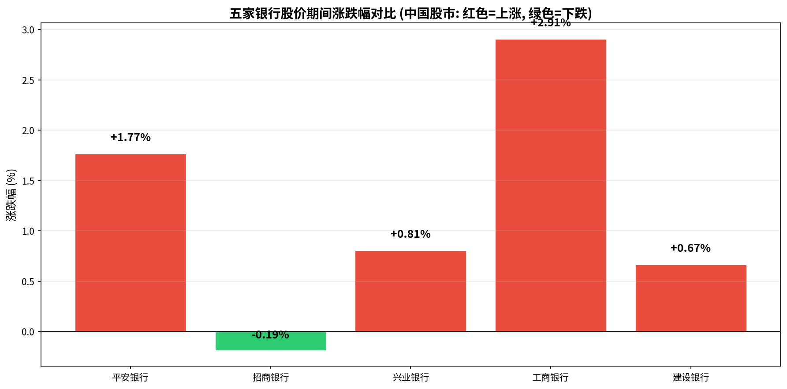
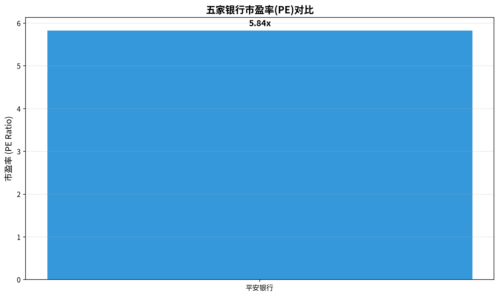

核心发现
期间表现最佳
工商银行
涨跌幅: +2.91%
估值最低(PE)
平安银行
PE: 5.84x
波动率最低
兴业银行
日波动: 0.77%
一、近期股价表现对比
1.1 价格变化数据
| 银行名称 | 股票代码 | 起始日期 | 起始价格(元) | 最新日期 | 最新价格(元) | 期间涨跌幅 | 最新PE |
|---|---|---|---|---|---|---|---|
| 工商银行 | 601398 | 2026-11-10 | 8.60 | 2026-11-13 | 8.85 | +2.91% | - |
| 平安银行 | 000001 | 2026-11-10 | 11.86 | 2026-11-13 | 12.07 | +1.77% | 5.84x |
| 兴业银行 | 601166 | 2026-11-10 | 19.67 | 2026-11-13 | 19.83 | +0.81% | - |
| 建设银行 | 601939 | 2026-11-10 | 12.03 | 2026-11-13 | 12.11 | +0.67% | - |
| 招商银行 | 600036 | 2026-11-10 | 43.01 | 2026-11-13 | 42.93 | -0.19% | - |
1.2 股价走势对比图 (标准化基准=100)

图1: 五家银行股价标准化走势对比 (起点价格=100)
1.3 期间涨跌幅对比

图2: 期间涨跌幅对比 (中国股市: 红色=上涨, 绿色=下跌)
二、估值水平对比
2.1 市盈率(PE)对比

图3: 五家银行市盈率(PE)对比
截至最新交易日，平安银行以 5.84x 的PE估值最低，显示出较高的估值安全边际。
三、历史一年表现回顾 (基于新闻证据)
重要背景说明
行情数据仅覆盖2026年11月10-13日共4个交易日。以下历史一年表现分析基于公开新闻报道，需谨慎解读。
3.1 2025年A股银行股表现
根据2026年1月的新闻报道，2025年A股银行股整体表现强劲：
- 农业银行：涨超50%，居所有银行股榜首
- 工商银行：涨幅21.54%，表现优异
- 建设银行：涨幅12.87%，稳健上涨
- 国有六大行、农商行全线上行，股份行、城商行表现分化
3.2 2026年上半年银行股表现
根据2026年7月南方都市报报道：
- 建设银行：年内涨幅达11.31%，5月末股价一度创历史新高
- 平安银行：跌幅在10%以内，相对抗跌
- 招商银行：上半年跌幅13.50%，表现欠佳
- 兴业银行：上半年跌幅超过14%，受ETF大额赎回等资金面影响
3.3 银行股整体估值状况
截至2026年6月30日，42只A股上市银行全线破净，市净率(PB)无一高于1倍。
3.4 银行股回调原因分析
根据南开大学田利辉教授的分析，2026年上半年银行股整体下行的核心原因：
- 资金面扰动：宽基ETF资金大幅流出，科技成长股强势吸金
- 市场风格切换：资金"虹吸"现象显著
- 分红季效应：分红结束后，短期套利资金集中离场
- 净息差担忧：市场对银行净息差收窄存在担忧
四、综合对比结论
4.1 近期表现排序 (2026年11月10-13日)
- 工商银行: +2.91%
- 平安银行: +1.77%
- 兴业银行: +0.81%
- 建设银行: +0.67%
- 招商银行: -0.19%
4.2 历史一年表现综合评价
综合2025年全年和2026年上半年的表现：
- 工商银行、建设银行：2025年涨幅显著(分别+21.54%、+12.87%)，2026年延续强势(建行+11.31%)，整体表现最优
- 平安银行：2026年相对抗跌(跌幅<10%)，PE估值最低(5.84x)，具有较高的安全边际
- 招商银行：作为头部股份行，2026年跌幅13.50%，管理层表示对股价不满意
- 兴业银行：2026年跌幅超14%，受资金面影响较大，已发布估值提升计划
核心结论
在最近一年的周期中，工商银行和建设银行表现相对更好，主要受益于：
- 国有大行的政策支持和资金偏好
- 高股息率吸引长期配置资金
- 稳健的基本面和较强的抗风险能力
- 2025年"中特估"概念推动估值修复
股份行(招行、兴业、平安)受ETF赎回、净息差收窄等因素影响，表现相对较弱，但平安银行因低估值展现出一定韧性。
五、数据局限性说明
重要提示
- 行情数据仅覆盖2026年11月10-13日共4个交易日，无法反映完整的最近一年表现
- 历史一年期价格数据不可用，仅能通过新闻片段推断2025年和2026年上半年表现
- 涨跌幅计算基于有限的4个交易日数据，不代表全年趋势
- 新闻信息来自公开媒体报道，可能存在时效性和准确性限制
- 本报告不构成任何投资建议，仅供参考研究使用